Bir kafede sıra nerede başlar?
Kasanın önü, kahve teslimi ve masalar arasında bir yürüyüş.

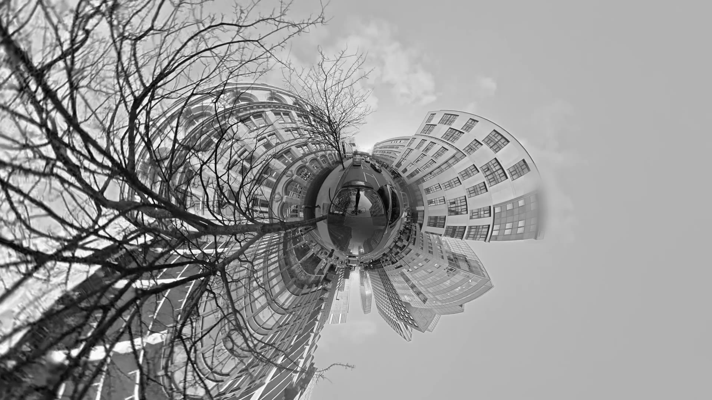
Önce ışığın izini süreriz. Kâğıda bir pencere çizeriz. Sabah o pencereden içeri girer.
Kurucu mimar
2Dsign Mimarlık ve Tasarım’ı 2019’da Ankara’da kurdu. Beytepe’deki stüdyosunda ekibiyle birlikte mekânlar ve bu mekânlara özel mobilyalar tasarlıyor.


İlk görüşmeyi mekânda yaparız. Ölçüleri alır, kimlerin nerede çalışacağını ve neye ihtiyaç duyacağını konuşuruz.
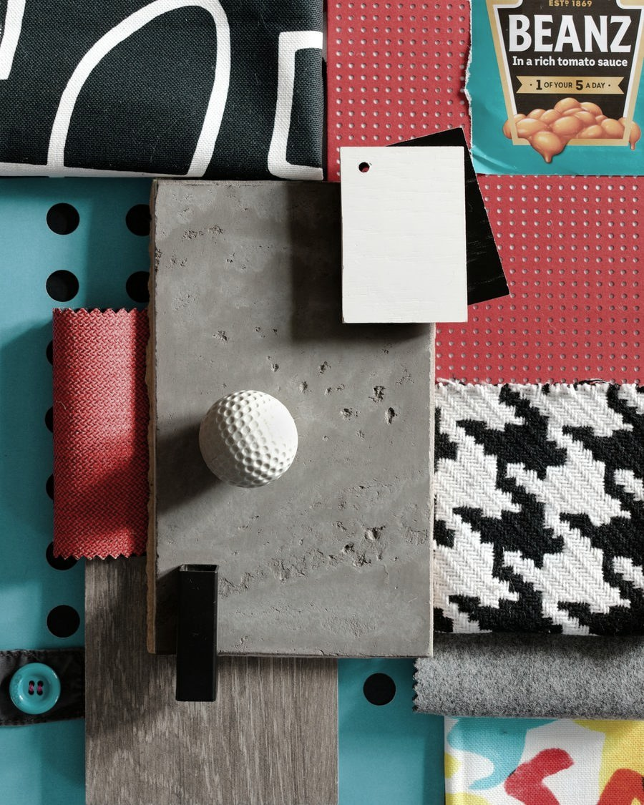
Yerleşimi eskizlerle karşılaştırırız. Işığı, dolaşımı ve mobilyanın yerini plan üzerinde birlikte seçeriz.
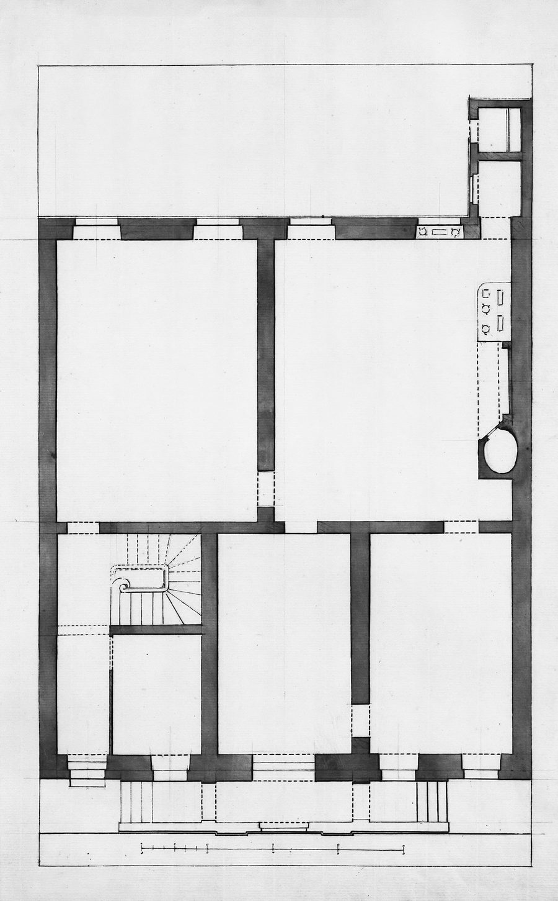
Planı ölçülendirir, kesitleri ve birleşim detaylarını çizeriz. Üreticiler tekliflerini aynı çizimler üzerinden verir.
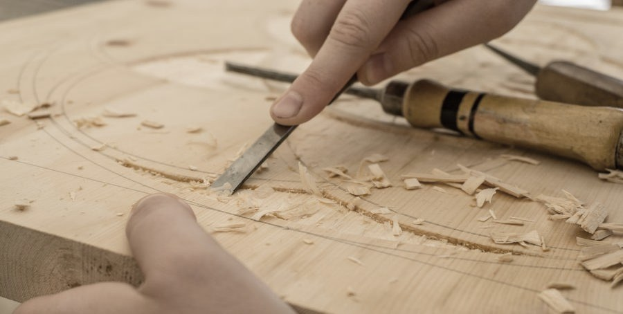
Özel mobilyanın ölçüsünü, malzemesini ve bitişini atölyede kontrol ederiz. Gerekirse montajdan önce bir numune hazırlarız.
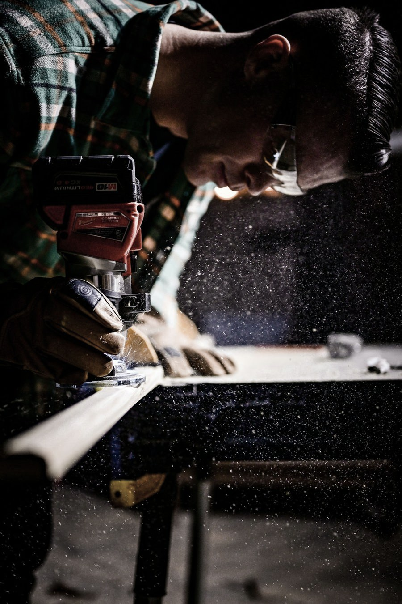
Çizimi yerinde kontrol eder, montajı takip ederiz. Teslimde mekânı birlikte gezer, kalan işleri tek tek gözden geçiririz.
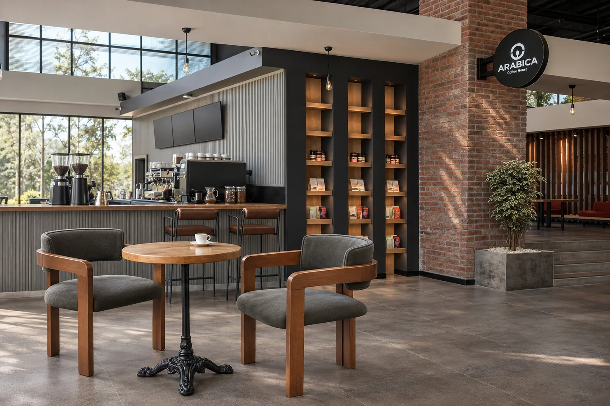
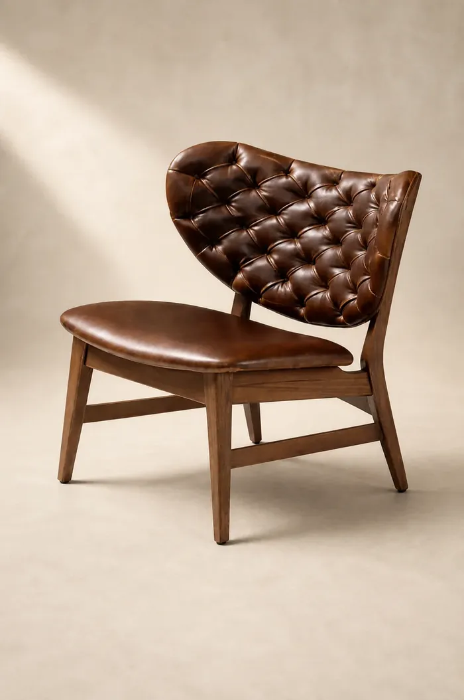
Kapitone Deri BerjerBerjer · kapitone deri Masif Ahşap Kollu KoltukKollu koltuk · deri + ahşap
Masif Ahşap Kollu KoltukKollu koltuk · deri + ahşap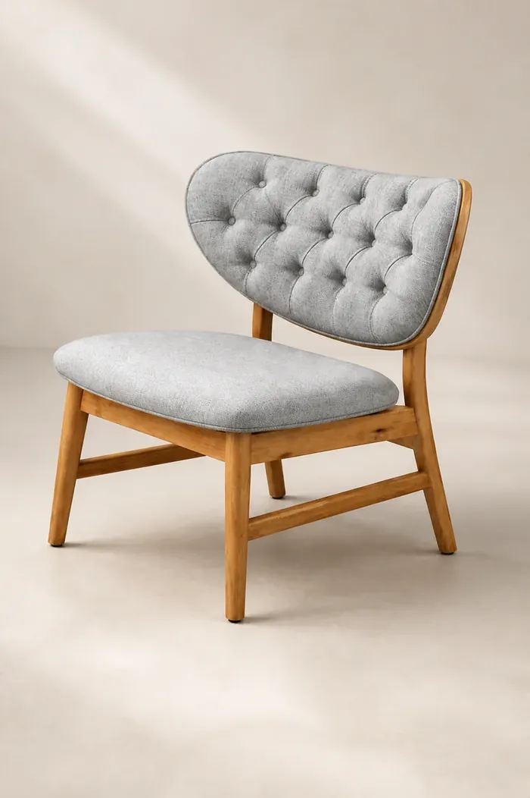
Kapitone Sırtlı KoltukLounge · kapitone kumaş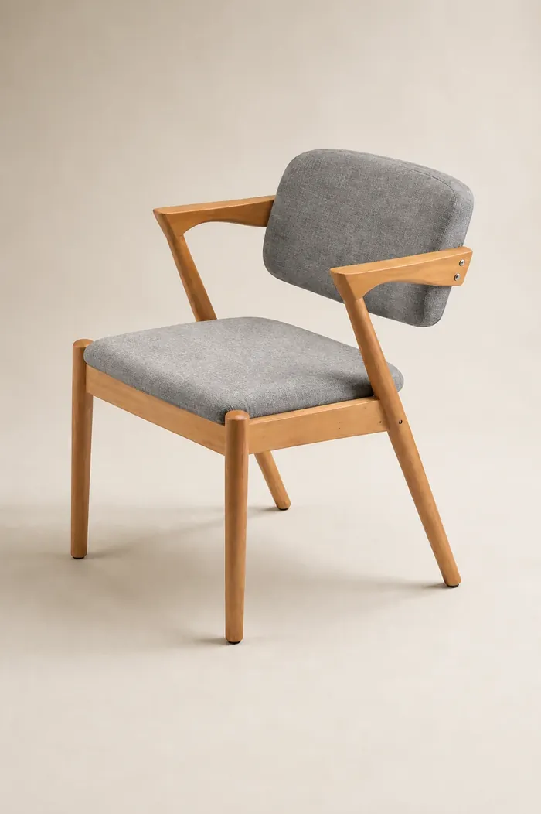
Ahşap Kollu SandalyeKollu sandalye · kumaş + meşe Yuvarlak Sırtlı SandalyeSandalye · dokulu kumaş
Yuvarlak Sırtlı SandalyeSandalye · dokulu kumaş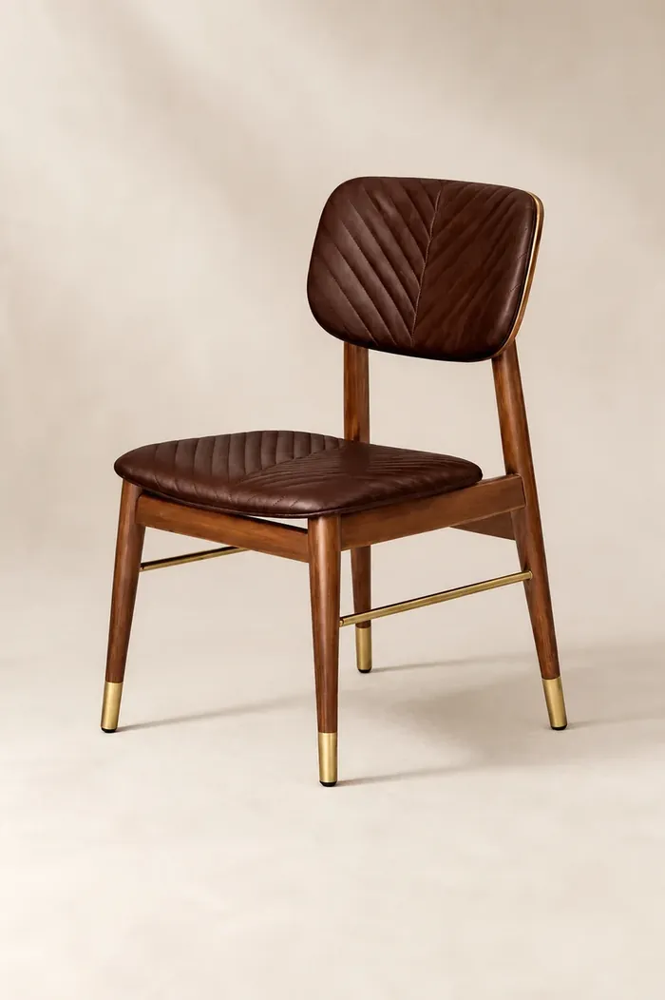
Pirinç Ayaklı Deri SandalyeSandalye · deri + pirinç Metal Kollu BerjerBerjer · deri +
metal
Metal Kollu BerjerBerjer · deri +
metal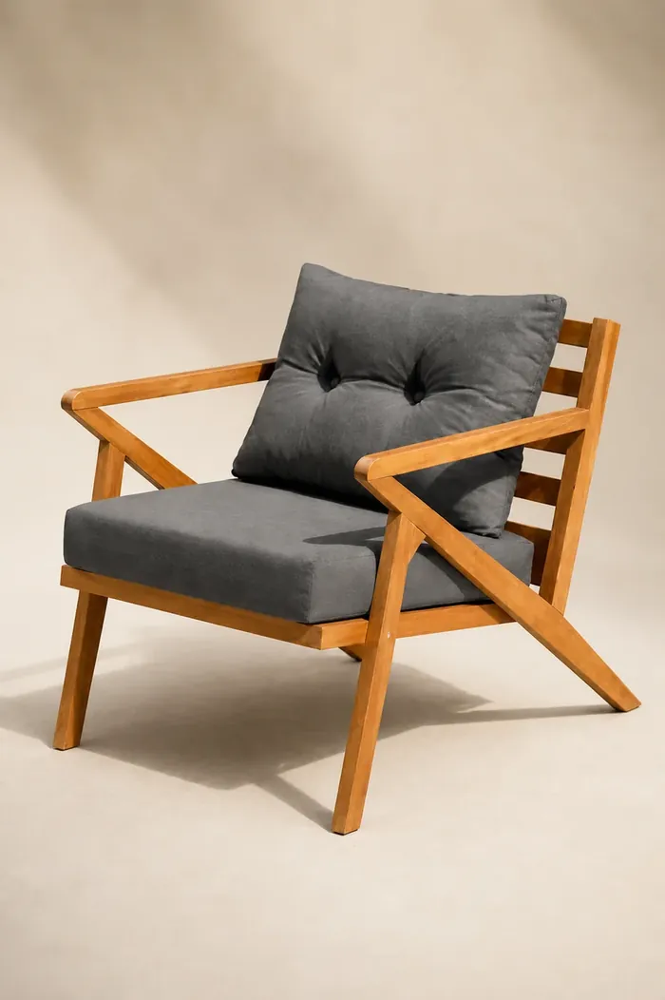
Çapraz Ahşap KoltukLounge · masif ahşap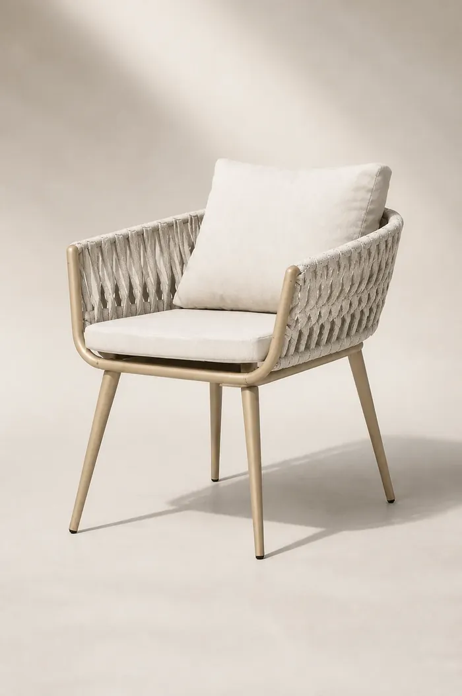
Örgü Kollu KoltukKollu koltuk · örgü + metal Metal Bahçe SandalyesiDış mekân · metal + sling
Metal Bahçe SandalyesiDış mekân · metal + sling Kütük Yan SehpaYan sehpa · doğal
kenar
Kütük Yan SehpaYan sehpa · doğal
kenar Yuvarlak Bistro MasaBistro masa · masif ahşap
Yuvarlak Bistro MasaBistro masa · masif ahşap Kare Bistro MasaBistro masa · ahşap +
döküm
Kare Bistro MasaBistro masa · ahşap +
döküm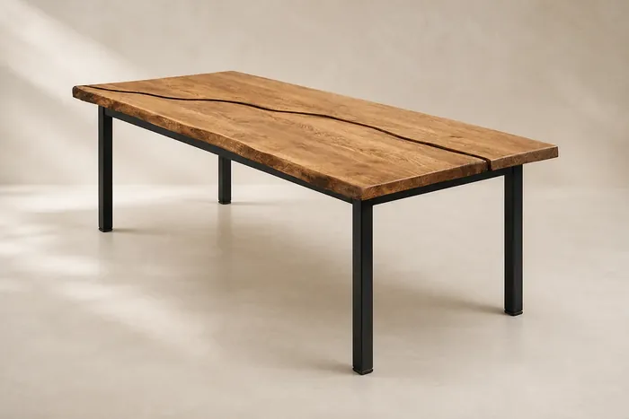
Doğal Kenar Yemek MasasıYemek masası · doğal kenar Doğal Kenar Uzun MasaOrtak masa · doğal kenar
Doğal Kenar Uzun MasaOrtak masa · doğal kenarKasanın önü, kahve teslimi ve masalar arasında bir yürüyüş.